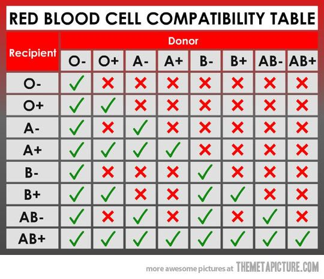

Donate your blood & make a Difference
Register NOW....
Although all blood is made of the same basic elements, not all blood is alike. In fact, there are eight different common blood types, which are determined by the presence or absence of certain antigens – substances that can trigger an immune response if they are foreign to the body. Since some antigens can trigger a patient's immune system to attack the transfused blood, safe blood transfusions depend on careful blood typing and cross-matching.
There are four major blood groups determined by the presence or absence of two antigens – A and B – on the surface of red blood cells:
There are very specific ways in which blood types must be matched for a safe transfusion. See the chart below:
In addition to the A and B antigens, there is a third antigen called the Rh factor, which can be either present (+) or absent ( – ). In general, Rh negative blood is given to Rh-negative patients, and Rh positive blood or Rh negative blood may be given to Rh positive patients. The universal red cell donor has Type O negative blood type. The universal plasma donor has Type AB blood type.
The Gift of blood
is the Gift of life.